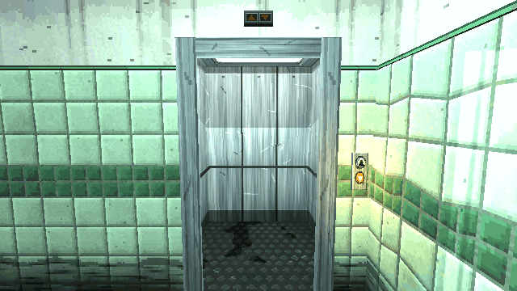

Tutorials › Call a Lift Between Floors
How to Call a Lift Between Floors in Godot 4
A lift car the player stands in and rides, sliding doors on every floor that shut before it moves and open when it stops, a call button on each floor and one in the car.

A lift is the quickest way to put a second floor in a horror level, and the easiest to get wrong: a car that leaves with its doors open, or a player who falls through its floor. One script runs it: the car is an AnimatableBody3D, so a player stands in it and rides; each floor's doors slide apart; a call button beside each floor's doors and one in the car call it with E. The doors shut before the car moves and open when it stops. With no models of your own it builds a lift of boxes to try.
Script: call_a_lift.gd (MIT) · Godot 4.3 or newer · its folder on GitHub
How to use it
- Add a
Node3Dand attachcall_a_lift.gd. Run the scene: withcarempty it builds a two-floor lift of boxes, its car on the ground floor. - For your own lift, set
carto anAnimatableBody3D(its origin on its floor) and list each floor's doors indoors, from the ground up: aNode3Dwith two leaves namedLeftandRight. Setfloor_height,slide,speed,door_secondsandstay_open. - The buttons are small
Area3Dnodes withinteract(player), added by the script beside each floor's doors (call_button_at) and in the car (car_button_at). Your player's interaction ray callsinteracton what it hits when E is pressed: give itsRayCast3Dcollide_with_areas. Or callcall_to(floor)from your own code;arrivedfires when the car stops.
What it needs
- Godot 4.3 or newer (the Compatibility renderer is enough).
- A player that interacts by calling
interact(player)on what its ray hits, and aCharacterBody3D(or any physics body) to ride the car.
Try it free
The code builds its own lift of boxes, so it runs in any project. The Cordatix PSX Horror Free Sampler has PSX Horror Spaces' 8 free room pieces to build a lobby round it; the lift's doors, car and call panel are in PSX Horror Spaces.
How it was tested
In Godot 4.3 and 4.7.2, on its lift of boxes: the ground doors open at the start and shut by themselves; a call from the upper floor shuts the doors before the car moves, and no door opens while it moves; the car rides 4 m up and a CharacterBody3D standing in it rides with it; the upper doors open when it stops and the ground ones stay shut; the car's own button takes it back down.
The code
extends Node3D
## How to Call a Lift Between Floors in Godot 4
## Cordatix Godot 4 PSX tutorials, MIT licensed: https://github.com/GoldenSparrow-Dev/cordatix-godot-psx-tutorials
## Written for: https://cordatix.itch.io/haunted-psx-spaces
## A lift between floors: a car the player stands in and rides, sliding doors on every floor, a call button beside
## each floor's doors and one inside the car. The doors shut before the car moves and open when it stops. The buttons
## are small Area3D nodes with interact(player): your player's ray calls it on what it hits when E is pressed. Leave
## car empty and it builds a two-floor lift of boxes to try it with. From the tutorial "How to Call a Lift Between
## Floors in Godot 4" (Cordatix). MIT licence.
signal arrived(at: int)
@export var car: AnimatableBody3D ## what rides: its origin on its floor; empty: a lift of boxes is built
@export var doors: Array[Node3D] = [] ## one per floor, from the ground up, each with two leaves: Left, Right
@export var floor_height := 4.0 ## from one floor to the next
@export var speed := 1.2 ## metres a second
@export var slide := 0.55 ## how far each leaf slides aside
@export var door_seconds := 1.0 ## to open or shut
@export var stay_open := 4.0 ## seconds the doors stay open once the car stops
@export var call_button_at := Vector3(0.95, 1.2, 0.1) ## beside each floor's doors (from its doors node)
@export var car_button_at := Vector3(0.85, 1.2, -0.3) ## inside the car (from the car)
var at_floor := 0
var _target := 0
var _ground := 0.0
var _leaves: Array = [] # per floor: its Left and Right leaves and where they stand shut
var _open := 0.0 # the doors of the floor the car is at: 0 shut .. 1 open
var _want_open := true
var _timer := 0.0
var _moving := false
## A button: E on it (your player's ray calls interact) calls the lift.
class LiftButton:
extends Area3D
var lift ## the lift script
var to_floor := 0 ## -1: the car's own button, the next floor up (from the top, back to the ground)
func interact(_player: Node) -> bool:
return lift.call_to(to_floor)
func _ready() -> void:
if car == null:
_build_boxes()
_ground = car.position.y
for k in doors.size():
var left := doors[k].get_node("Left") as Node3D
var right := doors[k].get_node("Right") as Node3D
_leaves.append([left, right, left.position.x, right.position.x])
_button(doors[k], k, call_button_at)
_button(car, -1, car_button_at)
_timer = stay_open
func _button(host: Node3D, to_floor: int, at: Vector3) -> void:
var b := LiftButton.new()
b.lift = self
b.to_floor = to_floor
b.position = at
b.add_child(_shape(Vector3(0.2, 0.3, 0.2), Vector3.ZERO))
_box(b, Vector3(0.12, 0.2, 0.04), Vector3.ZERO, Color(0.9, 0.2, 0.1))
host.add_child(b)
## Brings the car to a floor (-1: the next one). At that floor already, its doors open again.
func call_to(k: int) -> bool:
if doors.is_empty():
return false
if k < 0:
k = (at_floor + 1) % doors.size()
k = clampi(k, 0, doors.size() - 1)
if k == at_floor and not _moving:
_want_open = true
_timer = stay_open
else:
_target = k
_want_open = false
return true
## The motion: the doors of the floor the car is at follow _open; the car moves only once they are shut, and when it
## stops the doors of its new floor open and stay open for a while.
func _physics_process(delta: float) -> void:
var goal := 1.0 if _want_open and not _moving else 0.0
_open = move_toward(_open, goal, delta / door_seconds)
for k in _leaves.size():
var o := _open if k == at_floor else 0.0
o = o * o * (3.0 - 2.0 * o) # ease in and out
_leaves[k][0].position.x = _leaves[k][2] - slide * o
_leaves[k][1].position.x = _leaves[k][3] + slide * o
if _want_open and _open >= 1.0:
_timer -= delta
if _timer <= 0.0:
_want_open = false
if _target == at_floor and not _moving:
return
if _open > 0.0:
return # the doors shut first
_moving = true
var y := _ground + _target * floor_height
car.position.y = move_toward(car.position.y, y, speed * delta) # an AnimatableBody3D carries what stands on it
if is_equal_approx(car.position.y, y):
_moving = false
at_floor = _target
_want_open = true
_timer = stay_open
arrived.emit(at_floor)
## A lift of boxes to try it with: a lit car 2 m square and two floors of doors in front of it, facing +Z.
func _build_boxes() -> void:
car = AnimatableBody3D.new()
car.name = "Car"
add_child(car)
for part in [[Vector3(2, 0.1, 2), Vector3(0, -0.05, 0)], [Vector3(2, 2.4, 0.1), Vector3(0, 1.2, -1)],
[Vector3(0.1, 2.4, 2), Vector3(-1, 1.2, 0)], [Vector3(0.1, 2.4, 2), Vector3(1, 1.2, 0)]]:
_box(car, part[0], part[1], Color(0.55, 0.57, 0.6))
car.add_child(_shape(part[0], part[1]))
var lamp := OmniLight3D.new()
lamp.position = Vector3(0, 2.2, 0)
car.add_child(lamp)
for k in 2:
var d := Node3D.new()
d.name = "Doors%d" % k
d.position = Vector3(0, k * floor_height, 1.1)
add_child(d)
for side in [["Left", -0.3], ["Right", 0.3]]:
var leaf := _box(d, Vector3(0.6, 2.2, 0.06), Vector3(side[1], 1.1, 0), Color(0.35, 0.4, 0.42))
leaf.name = side[0]
doors.append(d)
func _shape(size: Vector3, at: Vector3) -> CollisionShape3D:
var box := BoxShape3D.new()
box.size = size
var s := CollisionShape3D.new()
s.shape = box
s.position = at
return s
func _box(parent: Node3D, size: Vector3, at: Vector3, colour: Color) -> MeshInstance3D:
var mesh := BoxMesh.new()
mesh.size = size
var m := MeshInstance3D.new()
m.mesh = mesh
var mat := StandardMaterial3D.new()
mat.albedo_color = colour
m.material_override = mat
m.position = at
parent.add_child(m)
return m
The devlog and the pack
The step-by-step walkthrough comes as a devlog on itch.io on 4 December 2026; this page is the tutorial until then. It is written for PSX Horror Spaces, a PS1-style asset pack by Cordatix for Godot 4, Unity, Unreal and Blender.